257 recipes built on what the storehouse actually carries. Browse them, plan a week, and let the shopping list build itself — then print the lot as a real half-letter book.
Free. No account, no sign-up, no app to install. Works with no signal.
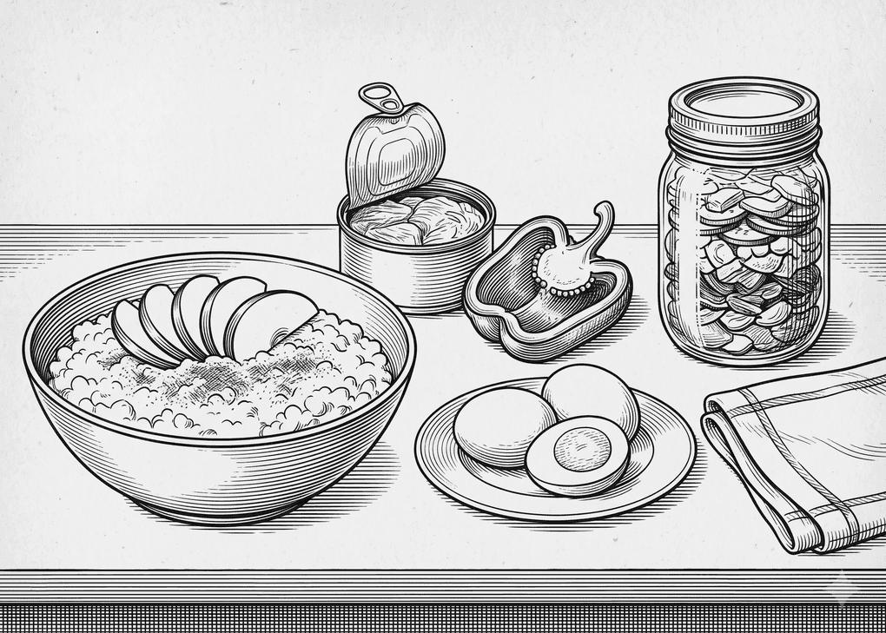
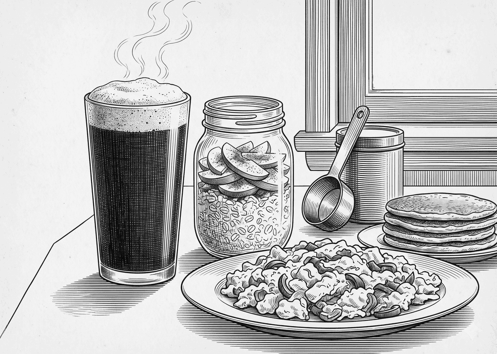
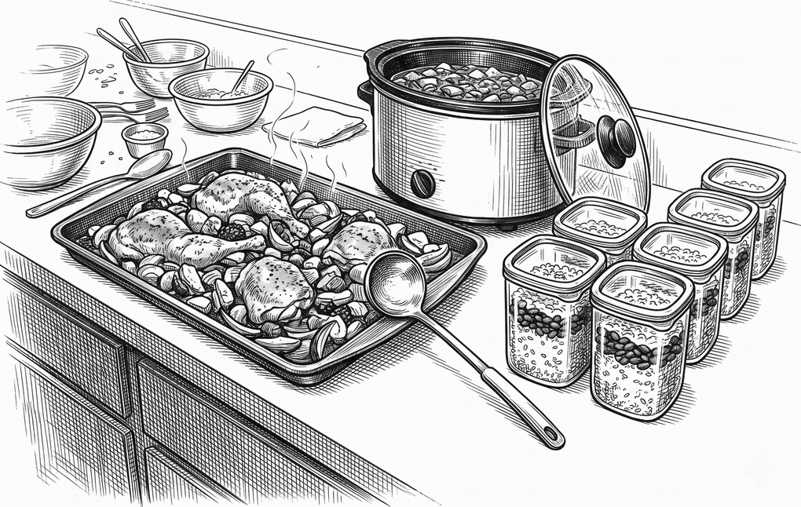
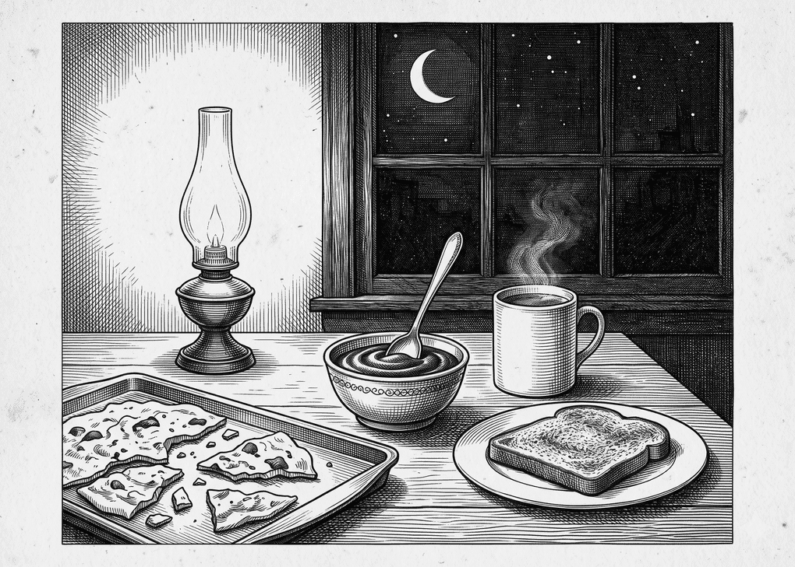
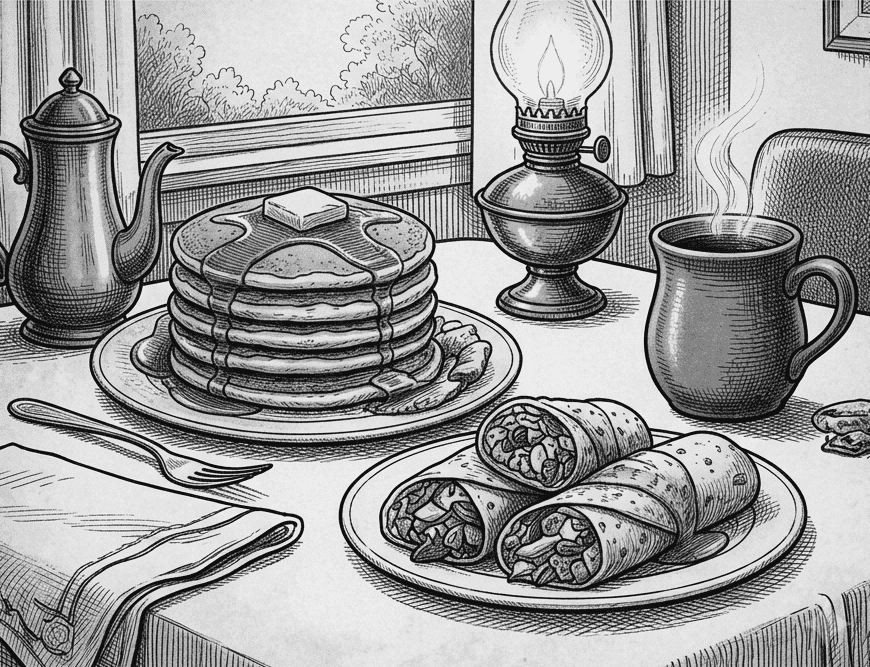
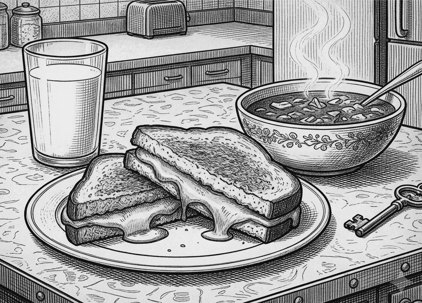
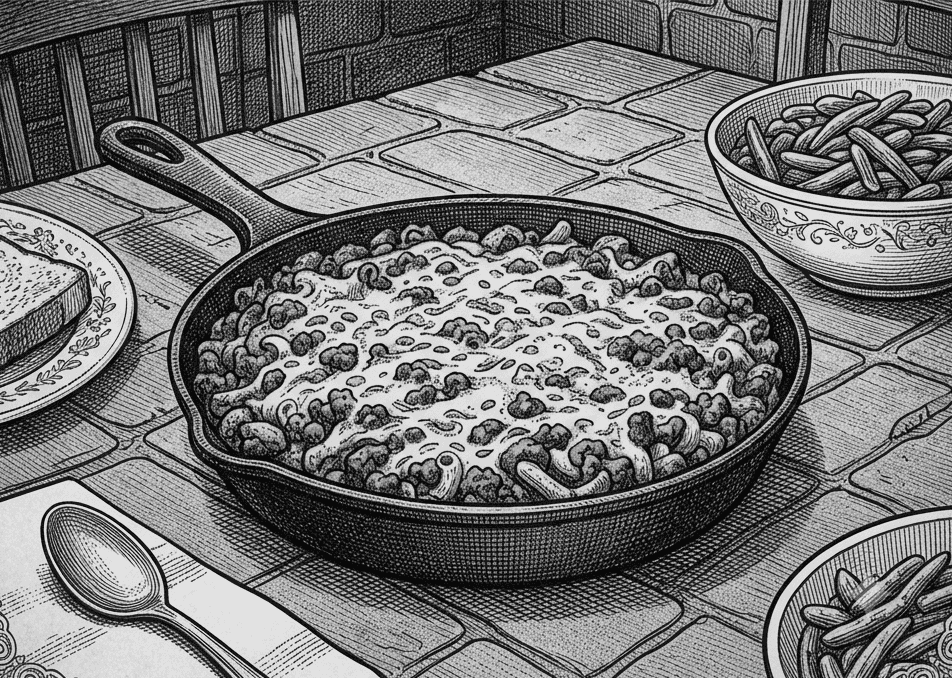
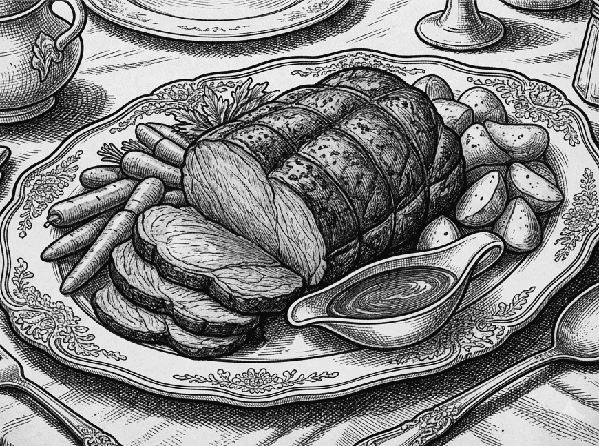
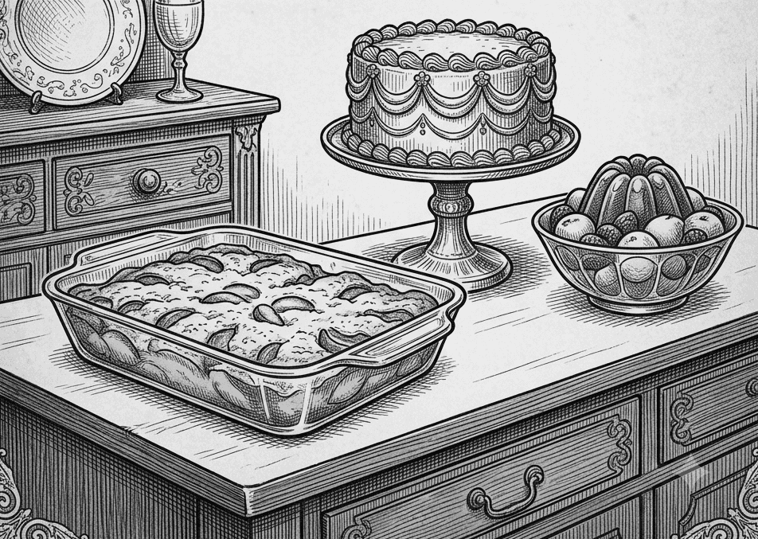
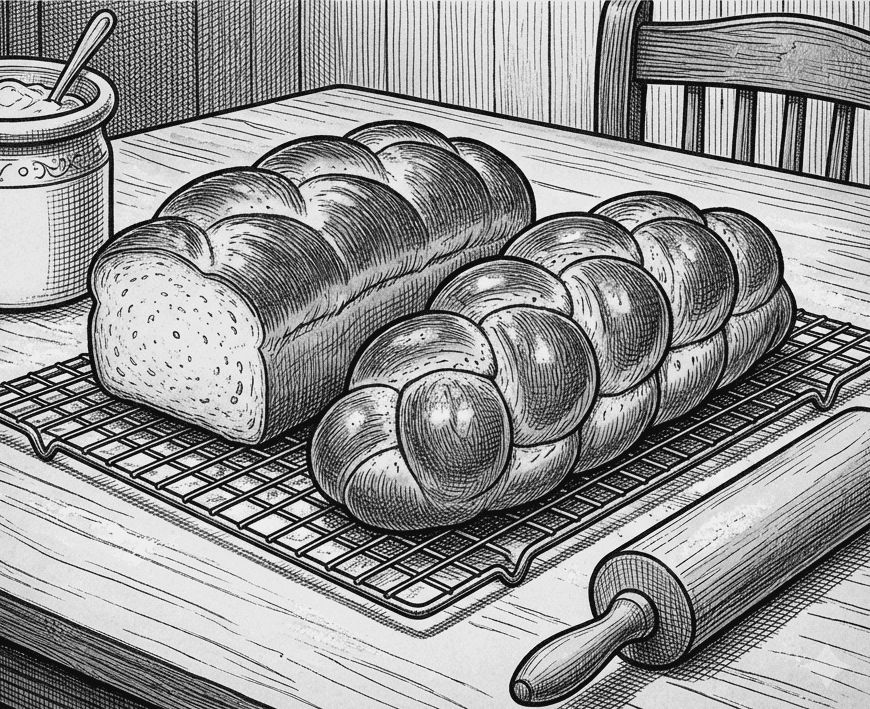
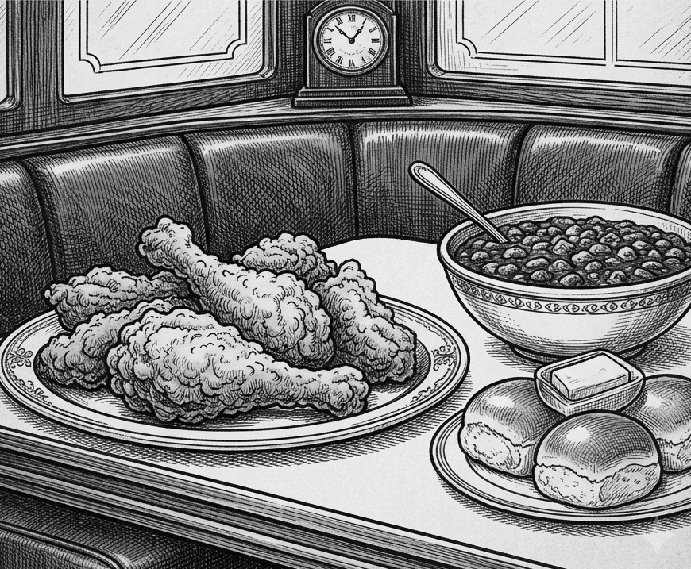
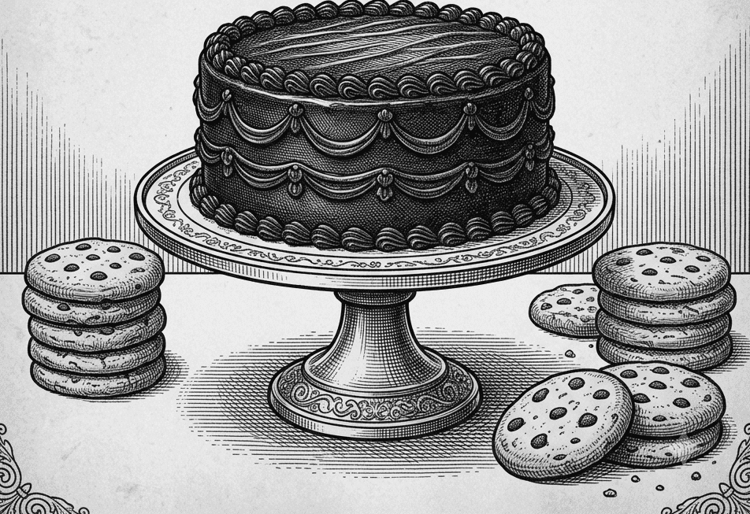
Four things, and it tries to do them properly rather than do twelve badly.
Filter by book, section, effort, or whether a recipe needs anything beyond standard storehouse items. Order by healthiest, most protein, or quickest. Every recipe scales from ¼× to 8×, and fractions come out as fractions.
There are no dates — Monday is a slot, not a date, and nothing resets on its own. Keep as many weeks as you like, name them for what they are, and rotate through them instead of starting from nothing every Sunday.
A diced apple and a sliced apple are apples. Three recipes wanting a cup, a cup and two tablespoons of cottage cheese ask for 2⅛ cups — not three separate lines. Seasonings get a name and no number, because nobody shops for two teaspoons of salt.
Half-letter, properly typeset, with front matter and its own contents. Pages are measured in the browser and packed to fit, so a recipe is never split across a page and a heading never sits alone at the foot of one.
The part everyone likes best.
Out of the box, everything saves in the browser you opened it in — your phone and your spouse’s each keep their own. Tap the badge, take the code it offers, and type that same code on the other phone. That is the whole of it.
Favorites, every week you have planned, which one is showing, and the shopping-list check-offs are now the same on both. Both editing at once is fine — adding a recipe to Tuesday touches only Tuesday, and ticking off milk touches only milk. Changes made offline queue up and go out when you reconnect.
The code is the key — there is no password, so keep it between the two of you. What is in there is a grocery list: no names, no addresses, nothing to pay with.
Rendered ahead of time, so a printable file is one click and no print dialog to argue with.
There is no app store involved. It installs from the page itself.